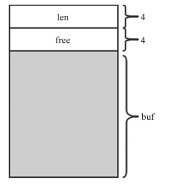
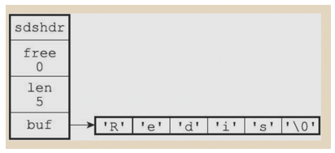
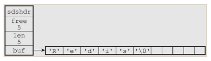
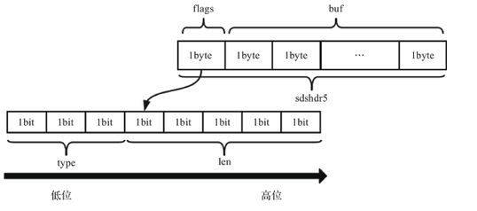
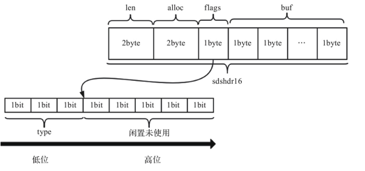
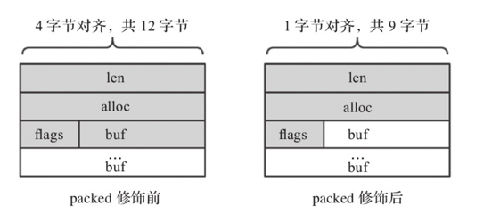

写在之前
本文中大量图片及内容引用自陈雷老师和他的团队所著的《Redis5设计与源码分析》以及 黄健宏老师所著的《Redis设计与实现》。
我们为什么要学习Redis底层源码
- 对技术的卓越追求：每一个程序员都应该对技术有所追求，每天单纯的只写业务代码难以提高自身技术深度。通过阅读源码可以大大提高我们自身的技术深度。
- 更加熟练的运用工具：无论是语言还是数据库都是我们生产的工具，通过阅读源码了解原理，可以做到知其然，更知其所以然。更加熟练的实用工具。
- 提升代码水平：Redis的设计非常的精妙，如各种数据结构的设计，以及网络模型实现等。通过学习他的代码思想，能给我们程序的编写带来很大的帮助。
- 解开计算机运行的神秘面纱：大多数开源软件的源码都是由C一类基础的语言来实现的，其中必定涉及了大量对内存和系统调度等的操作。
Redis 的设计非常简洁、优美、精巧和高效， 任何人只要愿意去阅读它的代码的话， 应该都会有所收获的。 –黄健宏（huangz) 2014.7.28
SDS是什么
SDS是简单动态字符串（simple dynamic string）的缩写，Redis使用SDS来存储有可能发生改变的字符串（如：各种类型数据的“键”，字符串类型的值，list中的各个元素的值等等）
- 如：当我们执行
set msg "hello world"Redis会为我们创建两个字符串对象，分别是保存着msg和hello world的SDS。 - 又比如：
lpush goods_list "SN001" "SN002" "SN003"Redis将会创建一个键为goods_list，值为一个列表对象的键值对：键是一个保存着goods_list的SDS，列表对象中包含着三个字符串对象，分别由三个SDS实现。除了用来保存数据库中的字符串值之外，SDS还被用作缓冲区（buffer）：AOF模块中的AOF缓冲区，以及客户端状态中的输入缓冲区 –黄健宏 著. Redis设计与实现
SDS的构造以及与C字符串的区别（结合Redis3源码讲解）
SDS 相关代码在 sds.h 与 sds.c 中
Redis3中SDS的构造
- 代码实现（代码位于sds.h/sdshdr）
/* * 保存字符串对象的结构 */ struct sdshdr { // buf 中已占用空间的长度 int len; // buf 中剩余可用空间的长度 int free; // 数据空间 char buf[]; };柔性数组：柔性数组成员（flexible array member），也叫伸缩性数组成员，只能被放在结构体的末尾。包含柔性数组成员的结构体，通过malloc函数为柔性数组动态分配内存。
柔性数组的地址和结构体是连续的。由于这个特性可以很方便的通过偏移柔型数组的首地址来找到结构体中的其余变量。 - SDS结构

len、free、和buf是相连的
3. SDS 示例

可以看到，SDS遵循C字符串以空字符结尾的惯例，保存空字符的1字节空间不计算在SDS的len属性里面。这样做的好处是可以重用C中字符串函数。

这个SDS同样保存了字符串Redis 但是为SDS额外分配了5字节的空间，所以free=5
与C字符串的比较：
- 常数复杂度获取长度
- 因为C字符串并不记录自身的长度信息，所以为了获取一个C字符串的长度，程序必须遍历整个字符串，对遇到的每个字符进行计数，直到遇到代表字符串结尾的空字符（’\0’）为止，这个操作的复杂度为O（N）。
- 而SDS只需要访问len属性即可得到字符串长度
/* * 返回 sds 实际保存的字符串的长度 * * T = O(1) */ static inline size_t sdslen(const sds s) { struct sdshdr *sh = (void*)(s-(sizeof(struct sdshdr))); return sh->len; }
- 避免缓冲区溢出
- 对C语言的字符串进行拼接操作时，如果拼接后的字符串长度超出字符串容量，那么会改变字符数组之外的内容。
- 而SDS API会在修改前对buf的大小进行判断（根据free）如果空间不足会先拓展空间，再执行拼接。
- 减少了修改字符串时的内存分配次数
- 空间预分配
空间预分配用于优化SDS的字符串增长操作：当SDS的API对一个SDS进行修改，并且需要对SDS进行空间扩展的时候，程序不仅会为SDS分配修改所必须要的空间，还会为SDS分配额外的未使用空间。
- redis3.0的分配策略： 如果修改后的长度小于1MB将会额外分配和len属性相同长度的空间；如果大于1MB将会额外分配1MB空间
通过这种预分配策略，SDS将连续增长N次字符串所需的内存重分配次数从必定N次降低为最多N次。
- 惰性空间释放
当SDS中存储的字符串长度缩短时，将回收多余的空间，而是使用free记录下来，以备下次使用通过惰性空间释放策略，SDS避免了缩短字符串时所需的内存重分配操作，并为将来可能有的增长操作提供了优化。
- 空间预分配
- 二进制安全
- C 语言字符串会将空字符 ‘\n’ 认为是字符串的结束，如果向字符串中存储
char* s = "hello \0 whorld!"那么最终 s 的值仅为“hello” 会抛弃掉’\0’之后的部分，因此只能存储文本不能保存图片音视频等二进制数据。 - 而SDS使用 len 来判断字符串的长度 而不是根据 ‘\0’来判断字符串是否结束。
SDS的API都是二进制安全的（binarysafe），所有SDS API都会以处理二进制的方式来处理SDS存放在buf数组里的数据
SDS和C字符串差异对照
| c字符串 | SDS |
|---|---|
| 获取字符串长度的复杂度为O(N) | 获取字符串长度的复杂度为O(1) |
| API是不安全的，可能会造成缓冲区溢出 | API是安全的不会造成缓冲区溢出 |
| 修改字符串长度N次必然需要进行N次长度分配 | 修改字符串长度N次最多需要进行N次内存重新分配 |
| 只能保存文本数据 | 可以保存文本或者二进制数据 |
| 可以使用所有<string.h>库中的函数 | 可以使用一部分<string.h>库中的函数 |
Redis5对SDS的优化
- 原来的SDS存在的问题
- 头部占用空间太大，即使存储1字节长度的字符也需要 4(int len) + 4(int free) + 1(字符串内容) 的空间，大多数情况下都用不到4个字节的空间来存储长度
- Redis5对SDS的优化
- Redis5 将字符串根据长度区分为 5 种，分别为
#define SDS_TYPE_5 0 // 用5位就可以存储长度， 最大长度为 2^5 - 1
#define SDS_TYPE_8 1 // 最大长度为2^8 - 1
#define SDS_TYPE_16 2 // 最大长度为2^16 - 1
#define SDS_TYPE_32 3 // 最大长度为2^32 - 1
#define SDS_TYPE_64 4 // 最大长度为2^64 - 1- 对于长度小于32的短字符串，5 位即可将长度存储，再用 3 位来存储字符串类型（0，1，2，3，4）。这样只需要使用1个字节就可以存储这两个内容：
struct __attribute__ ((__packed__))sdshdr5 {
unsigned char flags; /* 低3位存储类型, 高5位存储长度 */
char buf[];/*柔性数组, 存放实际内容*/
};结构如下图

sdshdr5结构中，flags占1个字节，其低3位（bit）表示type，高5位（bit）表示长度，能表示的长度区间为0～31（2^5-1），flags后面就是字符串的内容。
2. 对于长度大于31的字符串将len 和 free 单独存放。 sdshdr8,sdshdr16,sdshdr32,sdshdr64的结构相同，sdshdr16的结构如下所示

1）len：表示buf中已占用字节数。
2）alloc：表示buf中已分配字节数，不同于free，记录的是为buf分配的总长度。
3）flags：标识当前结构体的类型，低3位用作标识位，高5位预留。
4）buf：柔性数组，真正存储字符串的数据空间。
在Redis 5.0中，sdshdr8、sdshdr16、sdshdr32和sdshdr64的数据结构如下：
struct __attribute__((__packed__))sdshdr8 {
uint8_t len; /* 已使用长度, 用1字节存储 */
uint8_t alloc; /* 总长度, 用1字节存储*/
unsigned char flags; /* 低3位存储类型, 高5位预留 */
char buf[];/*柔性数组, 存放实际内容*/
};
struct __attribute__((__packed__))sdshdr16 {
uint16_t len; /*已使用长度, 用2字节存储*/
uint16_t alloc; /* 总长度, 用2字节存储*/
unsigned char flags; /* 低3位存储类型, 高5位预留 */
char buf[];/*柔性数组, 存放实际内容*/
};
struct __attribute__((__packed__))sdshdr32 {
uint32_t len; /*已使用长度, 用4字节存储*/
uint32_t alloc; /* 总长度, 用4字节存储*/
unsigned char flags;/* 低3位存储类型, 高5位预留 */
char buf[];/*柔性数组, 存放实际内容*/
};
struct __attribute__((__packed__))sdshdr64 {
uint64_t len; /*已使用长度, 用8字节存储*/
uint64_t alloc; /* 总长度, 用8字节存储*/
unsigned char flags; /* 低3位存储类型, 高5位预留 */
char buf[];/*柔性数组, 存放实际内容*/
};一般情况下，结构体会按其所有变量大小的最小公倍数做字节对齐，而用packed修饰后，结构体则变为按1字节对齐

这样做一方面节省了空间，另一方面保证了柔性数组紧跟在flags之后，可以通过偏移柔性数组指针来找到
SDS操作API（部分）
新建
sds sdsnewlen(const void *init, size_t initlen) {
void *sh;
sds s;
char type = sdsReqType(initlen);//根据字符串长度选择不同的类型
if (type == SDS_TYPE_5 && initlen == 0) type = SDS_TYPE_8;//SDS_TYPE_5强制转化为SDS_TYPE_8
int hdrlen = sdsHdrSize(type);//计算不同头部所需的长度
unsigned char *fp; /* 指向flags的指针 */
sh = s_malloc(hdrlen+initlen+1);//"+1"是为了结束符'\0'
...
s = (char*)sh+hdrlen;//s是指向buf的指针
fp = ((unsigned char*)s)-1;//s是柔性数组buf的指针,-1即指向flags
...
s[initlen] = '\0';//添加末尾的结束符
return s;
}Redis 3.2后的SDS结构由1种增至5种，且对于sdshdr5类型，在创建
空字符串时会强制转换为sdshdr8。原因可能是创建空字符串后，其内容可能会频繁更新而引发扩容，故创建时直接创建为sdshdr8。
从源码中我们可以看到，其实s就是一个字符数组的指针，即结构中的buf。这样设计的好处在于直接对上层提供了字符串内容指针，兼容了部分C函数，且通过偏移能迅速定位到SDS结构体的各处成员变量。
释放
- 真正释放内存：这种方法通过移动
s将指针定位到SDS首部，然后使用s_free将内存释放void sdsfree(sds s) { if (s == NULL) return; s_free((char*)s-sdsHdrSize(s[-1]));//此处直接释放内存 } - 重置值而不释放内存：此方法可以将SDS的len归零，但不释放内存，新的数据可以覆盖写入到buf中，减少了申请内存的开销。
void sdsclear(sds s) { sdssetlen(s, 0); //统计值len归零 s[0] = '\0';//清空buf }拼接
拼接操作可以通过调用sdscatsds方法来完成，sdscatsds是暴露给上层的方法，在方法中调用了sdscatlen来完成对字符串的拼接。
因为拼接后的字符串长度有可能大于当前SDS类型的容量，所以在sdscatlen方法中调用了sdsMakeRoomFor来判断是否需要扩容，如果不需要扩容就返回原来的字符串，如果需要扩容就返回扩容好的新字符串* 。
SDS的扩容策略：
- 若sds中剩余空闲长度大于新增内容的长度addlen，直接在柔性数组buf末尾追加即可，无须扩容。
- 若sds中剩余空闲长度avail小于或等于新增内容的长度addlen，则分情况讨论：新增后总长度len+addlen<1MB的，按新长度的2倍扩容；新增后总长度len+addlen>1MB的，按新长度加上1MB扩容。
sds sdscatsds(sds s, const sds t) { return sdscatlen(s, t, sdslen(t)); } /* 这是一个二进制安全的方法，功能是将指针t的内容和指针s的内容拼接在一起*/ sds sdscatlen(sds s, const void *t, size_t len) { size_t curlen = sdslen(s); s = sdsMakeRoomFor(s,len); //这里进行了扩容的判断操作 if (s == NULL) return NULL; memcpy(s+curlen, t, len);//直接拼接, 保证了二进制安全 sdssetlen(s, curlen+len); s[curlen+len] = '\0';//加上结束符 return s; } /*判断sds是否需要扩容，如果不需要扩容就返回原来的字符串，如果需要扩容就返回扩容好的新字符串*/ sds sdsMakeRoomFor(sds s, size_t addlen) { void *sh, *newsh; size_t avail = sdsavail(s);//此处返回的是SDS中剩余空闲长度 size_t len, newlen; char type, oldtype = s[-1] & SDS_TYPE_MASK; //这里的 取得的是 SDS的类型 SDS_TYPE_MASK = 7 => 00000111 int hdrlen; /* Return ASAP if there is enough space left. */ if (avail >= addlen) return s; len = sdslen(s); sh = (char*)s-sdsHdrSize(oldtype); newlen = (len+addlen); if (newlen < SDS_MAX_PREALLOC) newlen *= 2; else newlen += SDS_MAX_PREALLOC; type = sdsReqType(newlen); /* Don't use type 5: the user is appending to the string and type 5 is * not able to remember empty space, so sdsMakeRoomFor() must be called * at every appending operation. */ if (type == SDS_TYPE_5) type = SDS_TYPE_8; hdrlen = sdsHdrSize(type); if (oldtype==type) { newsh = s_realloc(sh, hdrlen+newlen+1); if (newsh == NULL) return NULL; s = (char*)newsh+hdrlen; } else { /* Since the header size changes, need to move the string forward, * and can't use realloc */ newsh = s_malloc(hdrlen+newlen+1); if (newsh == NULL) return NULL; memcpy((char*)newsh+hdrlen, s, len+1); s_free(sh); s = (char*)newsh+hdrlen; s[-1] = type; sdssetlen(s, len); } sdssetalloc(s, newlen); return s; }